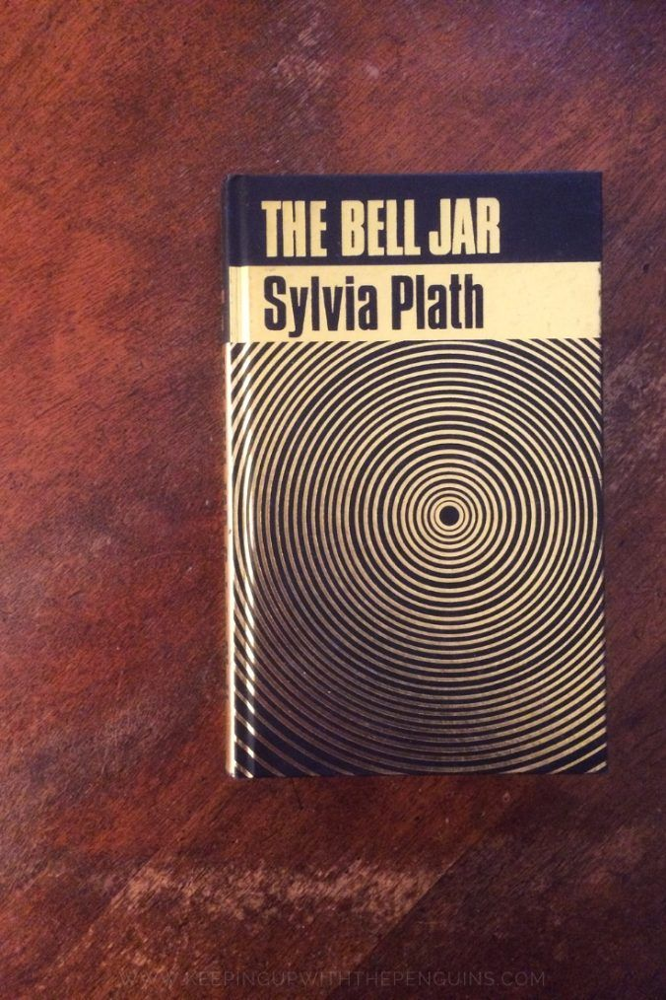
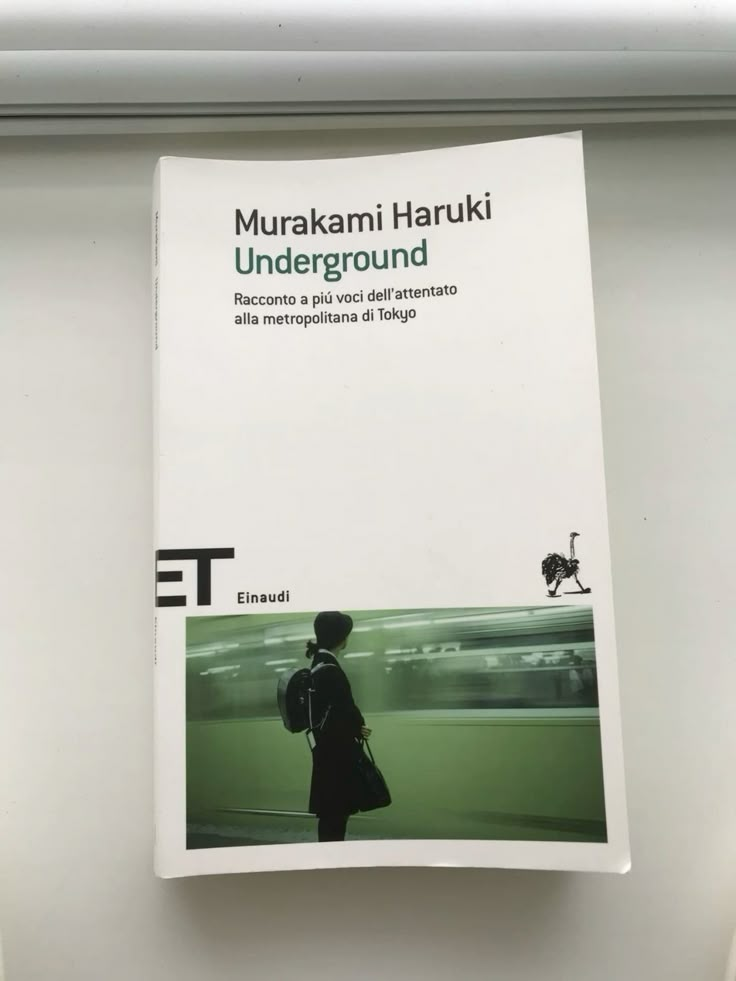
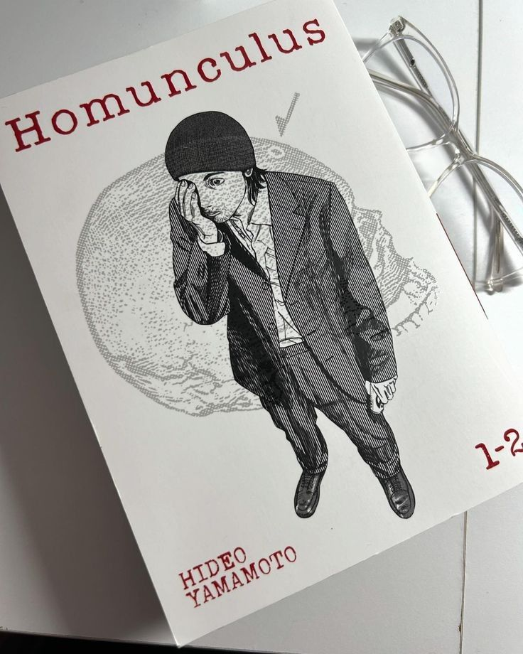
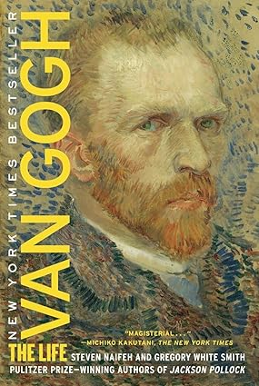
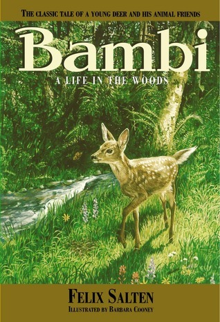
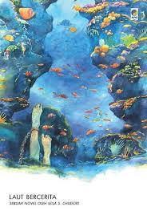

The Bell Jar - Sylvia Plath
The Bell Jar adalah satu-satunya novel yang ditulis oleh penulis dan penyair Amerika Sylvia Plath. Pada awalnya, novel ini diterbitkan dengan menggunakan pseudonim "Victoria Lucas" pada bulan Januari 1963. Novel ini berbentuk semiautobiografi dengan nama tempat dan orang yang disamarkan. Novel ini sering dianggap sebagai roman à clef karena protagonis mengalami kekalutan mental mirip dengan pengalaman Plath sebagai seorang penulis. Penyakitnya ini mungkin merupakan depresi klinis atau gangguan bipolar II. Plath meninggal karena bunuh diri dalam kurun waktu satu bulan setelah terbitan pertamanya di Britania Raya. Novel ini diterbitkan dengan nama Plath pada tahun 1967 dan tidak pernah diterbitkan di Amerika Serikat hingga tahun 1971 sesuai dengan keinginan suaminya , Ted Hughes dan ibu Plath.[1] Novel ini telah diterjemahkan dalam belasan bahasa berbeda di seluruh dunia dan telah diadaptasi menjadi film pada tahun 1979.[2]

Murakami Haruki - Underground. Racconto a più voci dell'attentato alla metropolitana di Tokyo
Pada tanggal 20 Maret 1995, racun cair tumpah di empat kereta bawah tanah Tokyo oleh sebuah sekte agama, menyebabkan dua belas orang meninggal dan ribuan orang mabuk. Buku ini merupakan rekonstruksi peristiwa melalui kesaksian orang-orang yang terlibat, tetapi juga merupakan perjalanan ke dalam hati nurani kolektif orang Jepang. Satu-satunya karya non-naratif Haruki terdiri dari dua bagian: bagian pertama menyajikan wawancara dengan empat puluh korban serangan (dan kerabat korban tewas). Yang kedua, dibuat beberapa tahun kemudian, berisi wawancara dengan anggota sekte tersebut. Wawancara keduanya menunjukkan kepada kita Jepang yang didominasi oleh keterasingan.

Homunculus - Hideo Yamamoto
Homunculus adalah serial manga karya Hideo Yamamoto yang mengeksplorasi pikiran manusia dan manifestasi trauma, rasa tidak aman, dan ingatan yang tertekan. Serial ini dipengaruhi oleh psikologi Freudian. Susumu Nakoshi adalah seorang pria tunawisma berusia 34 tahun yang tinggal di mobilnya. Selama dua minggu, ia menolak undangan sesama tunawisma untuk mendirikan tenda bersama mereka, lebih memilih tidur di mobilnya. Namun, suatu hari, ia diganggu oleh seorang pria berpenampilan aneh yang mencari peserta untuk menjalani trepanasi.

Van Gogh: The Life - Steven Naifeh
Steven Naifeh dan Gregory White Smith, yang menggetarkan hati para pembaca dengan biografi Jackson Pollock yang memenangkan Penghargaan Pulitzer, telah menulis karya hebat lainnya—potret Vincent van Gogh yang sangat terperinci dan menarik untuk dibaca. Bekerja sama dengan Museum Van Gogh di Amsterdam, Naifeh dan Smith telah mengakses banyak materi yang sebelumnya belum dimanfaatkan untuk memberikan pemahaman penting tentang mitologi yang lebih besar dari kehidupan seniman hebat ini: perjuangan awalnya untuk menemukan tempatnya di dunia; hubungannya yang intens dengan saudaranya Theo; dan kepindahannya ke Provence, tempat ia melukis beberapa karya yang paling disukai dalam seni Barat. Para penulis juga menyoroti banyak aspek dunia batin Van Gogh yang belum dieksplorasi: kehidupan romantisnya yang tidak menentu dan penuh gejolak; serangan depresi dan penyakit mentalnya; dan keadaan yang tidak jelas seputar kematiannya pada usia tiga puluh tujuh tahun.

Bambi: A Life in the Woods - Felix Salten
Kehidupan Bambi di hutan dimulai dengan bahagia. Ada hewan-hewan hutan yang bisa diajak bermain -- Kelinci yang ramah, tupai yang cerewet, burung hantu yang berisik, dan sepupu kembar Bambi, Gobo yang lemah dan Faline yang cantik.
Namun, musim dingin tiba, dan Bambi mengetahui bahwa hutan menyimpan bahaya -- dan hal-hal yang tidak ia pahami. Salju pertama membuat makanan sulit ditemukan. Ayah Bambi, seekor rusa jantan yang tampan, menjelajahi hutan, tetapi meninggalkan Bambi dan ibunya sendirian.
Lalu ada Manusia. Ia datang ke hutan dengan senjata yang dapat melukai seekor hewan. Ia melakukan hal-hal buruk kepada Gobo, kepada ibu Bambi, dan bahkan kepada Bambi. Namun, Ia tidak dapat mencegah Bambi tumbuh menjadi rusa jantan yang tampan, dan menjadi... Pangeran Hutan.

Laut Bercerita - Leila S. Chudori
Laut Bercerita adalah novel karya penulis asal Indonesia bernama Leila Salikha Chudori. Ia juga merupakan seorang wartawan di majalah Tempo. Novel terbitan tahun 2017 ini, mengangkat tema persahabatan, percintaan, kekeluargaan, dan rasa kehilangan. Dengan berlatarkan waktu di tahun 90-an dan 2000, novel ini mampu membius para pembacanya untuk menerobos ruang masa lalu dan kembali melihat peristiwa yang terjadi di tahun yang bersangkutan.
Dengan kata lain, novel setebal 394 halaman ini, mengingatkan para pembacanya akan era-era reformasi di tahun 1998 yang bernas akan kepahitan dan kekejaman bagi para pembela rakyat. Leila selaku penulis memang menegaskan bahwa novel ini hanya historical fiction, tetapi ia menulis berdasarkan pada fakta yang ada. Hal itu karena sebelum Leila mulai menulis novel ini, ia melakukan riset wawancara terlebih dahulu secara langsung pada korban yang berhasil kembali atau kerabat korban.